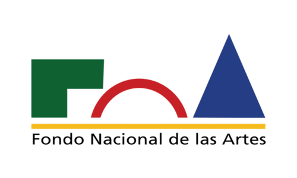

←
volver al escáner
Mano en mármol Emperador
Escultura contemporánea — Colección Fondo Nacional de las Artes
Cargando modelo 3D…
Desliza para rotar
←
Volver a la pieza
Mano en mármol Emperador
Colección Fondo Nacional de las Artes

Buenos Aires, Argentina
Producción contemporánea
Mármol Emperador
Origen y adquisición
Esta escultura fue incorporada al acervo del Fondo Nacional de las Artes como parte de su programa de apoyo a la producción escultórica contemporánea, orientado a sostener y visibilizar el trabajo en piedra natural dentro del panorama artístico argentino.
La elección de representar una mano responde a una larga tradición escultórica que utiliza el fragmento corporal como estudio de expresión, gesto y anatomía, sin necesidad de una figura completa.
1958
Creación del Fondo Nacional de las Artes, con el objetivo de fomentar y financiar la producción artística nacional.
1980–1990
Renovado interés por la escultura en piedra dentro de la producción contemporánea argentina, en diálogo con tradiciones clásicas europeas.
2000–2010
Consolidación de talleres de talla en piedra natural en el país, con acceso a mármoles importados como el Emperador.
2018
La obra ingresa al acervo del Fondo Nacional de las Artes mediante el programa de apoyo a las artes visuales.